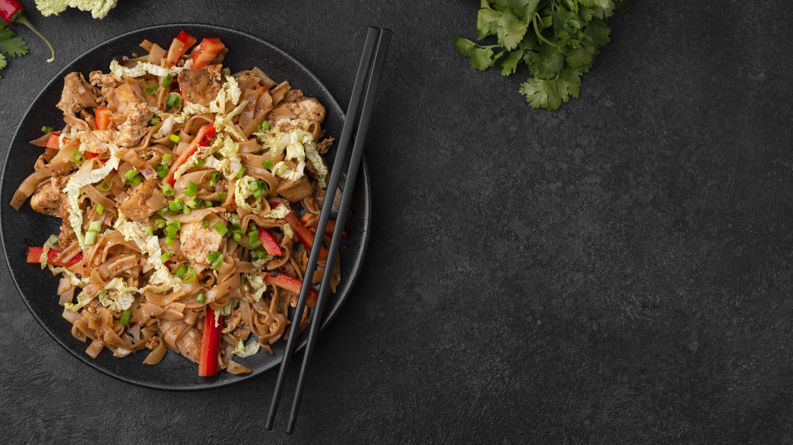
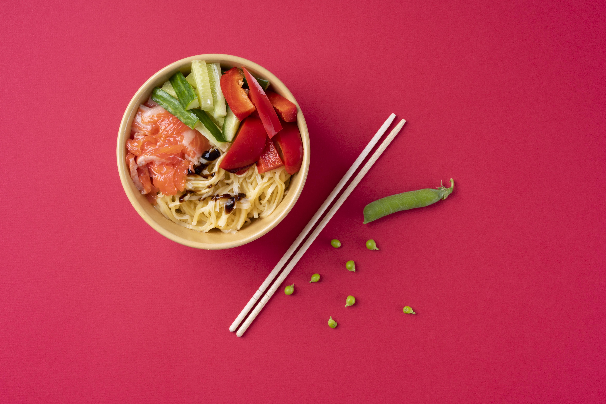

| Plat | Prix |
|---|---|
| Sushi | 7€ |
| Nouilles | 10€ |
| Nems | 8€ |
| Pad thaï | 12€ |
| Total moyen | 9€ |
Et oui Jamy, et pas des moindres !
Clique ici pour plus de découverte Ou ici pour apprendre la cuisine asiatique dans son ensemble !Sinon il y a une autre vidéo plus ambiance street food qui peuvent vous intéresser !